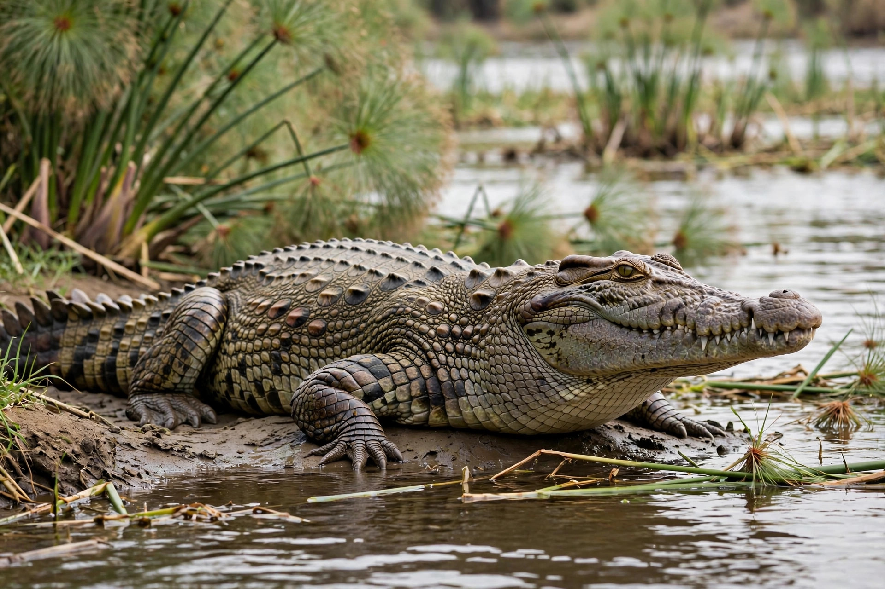

| Lujan v. Defenders of Wildlife | |
|---|---|
| Argued | December 3, 1991 |
| Decided | June 12, 1992 |
| Citation | 504 U.S. 555 |
| Majority | Scalia |
Lujan v. Defenders of Wildlife, 504 U.S. 555 (1992), is a landmark United States Supreme Court case about standing and justiciability. The Court held that environmental organisations lacked standing to challenge a regulation interpreting Section 7 of the Endangered Species Act as applying only within the United States and the high seas, not to federally funded projects abroad.

Defenders of Wildlife and others alleged members wished to observe endangered species (such as the Nile crocodile and Asian elephant) threatened by U.S.-funded projects in Egypt and Sri Lanka, and that failure to consult under the Act injured them.
Justice Scalia's opinion articulated the now-canonical three elements of Article III standing: (1) injury in fact — concrete, particularised, actual or imminent; (2) causation — fairly traceable to the defendant; and (3) redressability — likely to be redressed by a favourable decision. The plaintiffs' professed intent to return to foreign sites "some day," without concrete plans, was insufficient, and procedural injury and the Act's citizen-suit provision could not substitute for concrete injury.
Lujan remains the leading modern statement of standing doctrine and a major limit on environmental and public-interest litigation.